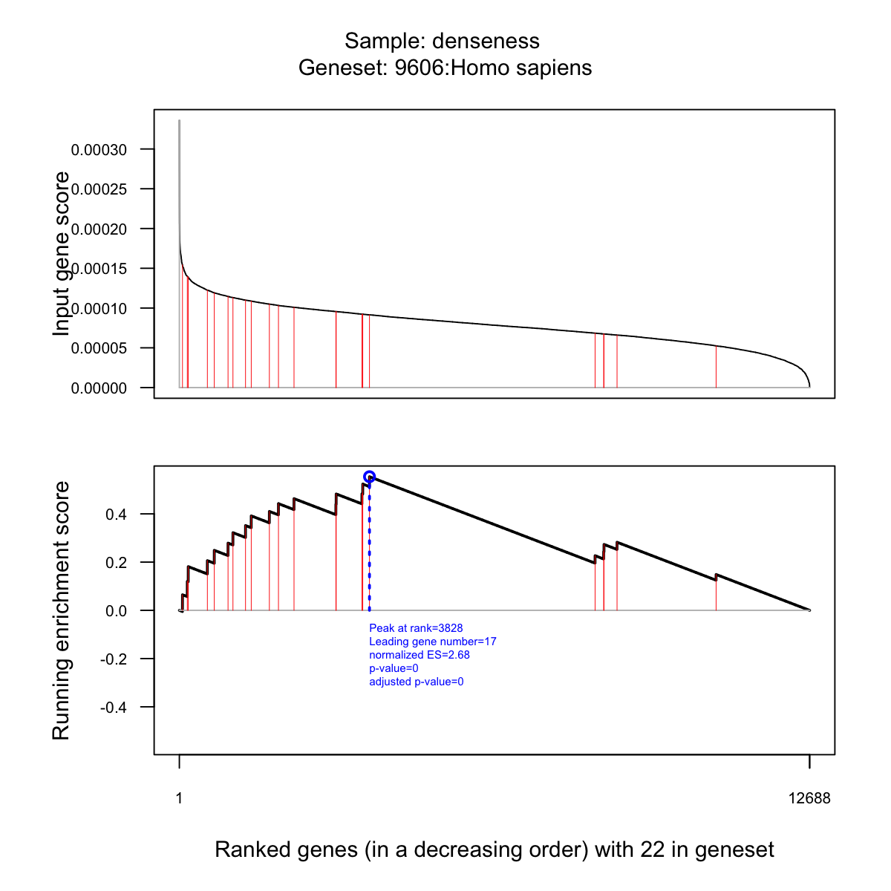
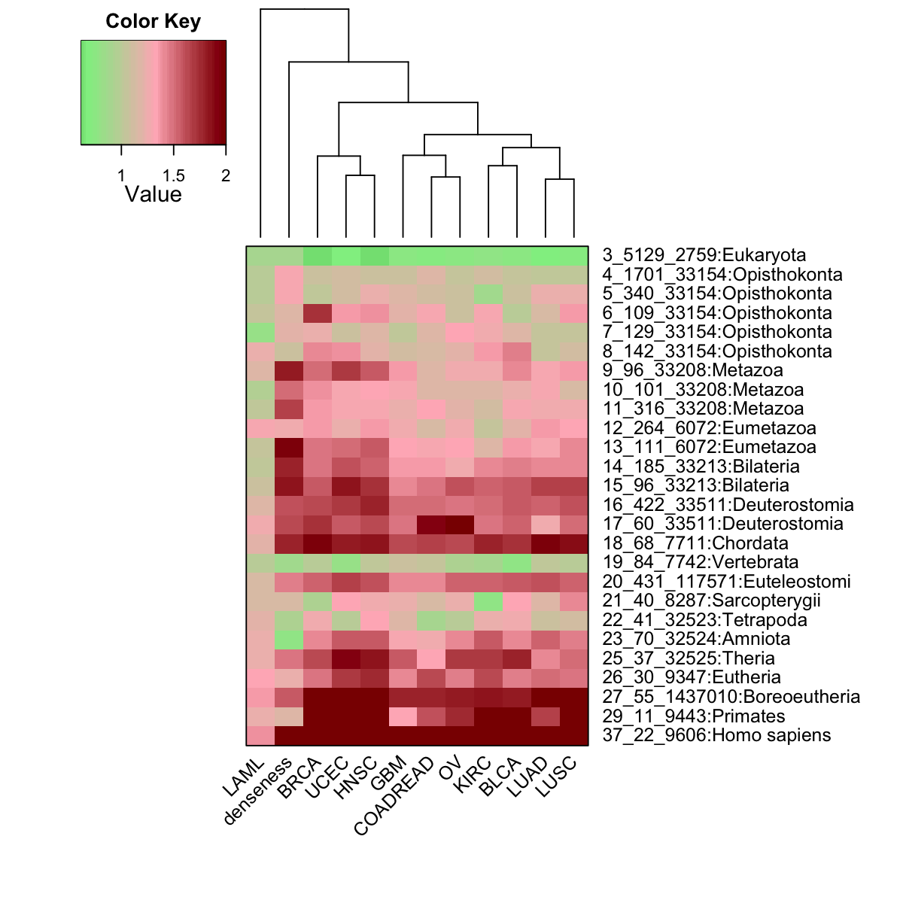
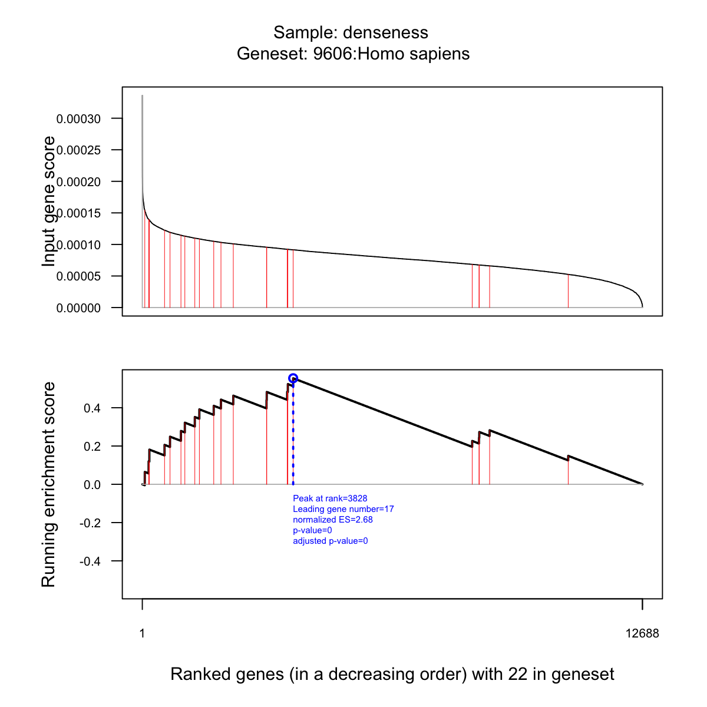
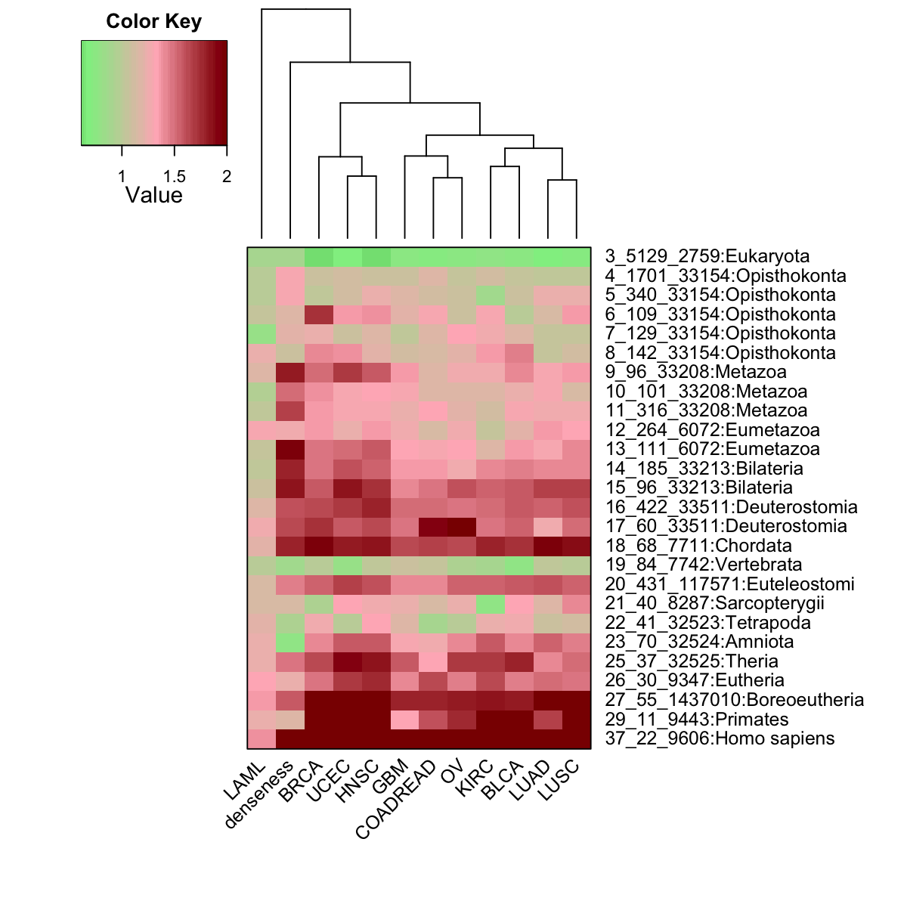

Demo for TCGA mutational profile dataset
Notes:
# This is a demo for TCGA mutational profile dataset from Kandoth et al
#
# This dataset is available from TCGA (see http://www.ncbi.nlm.nih.gov/pubmed/24132290), containing somatic mutational profiles for 3130 cancer samples (i.e. only those having clinical data). These cancer samples belong to one of 12 major cancer types, including breast adenocarcinoma (BRCA), lung adenocarcinoma (LUAD), lung squamous cell carcinoma (LUSC), uterine corpus endometrial carcinoma (UCEC), glioblastoma multiforme (GBM), head and neck squamous cell carcinoma (HNSC), colon and rectal carcinoma (COAD/READ), bladder urothelial carcinoma (BLCA), kidney renal clear cell carcinoma (KIRC), ovarian serous carcinoma (OV) and acute myeloid leukaemia (LAML). For each patient sample, somatic mutations are represented as a profile of binary (1, 0) states on genes, where '1' indicates a gene for which mutation has occurred in the tumor relative to germ line. The dataset is stored in "TCGA_mutations" (as an 'ExpressionSet' object), including:
## assayData: exprs(TCGA_mutations), a matrix of 19477 genes X 3130 samples;
## phenoData: pData(TCGA_mutations), variables describing sample phenotypes (i.e. columns in assayData), including information about samples: "Age", "Days_to_death", "Days_to_last_followup", "Vita_status", "Gender", "Date_diagnosis", "TCGA_tumor_type", "Tumor_stage", "Tumor_grade"
## featureData: fData(TCGA_mutations), variables describing features (i.e. rows in assayData), including information about features/genes: "EntrezID" for gene EntrezID, "Symbol" for gene symbol, "Desc" for gene description, "Synonyms" for gene symbol alias
###############################################################################
library(dnet)
# Load or install packages specifically used in this demo
list.pkg <- c("affy")
for(pkg in list.pkg){
if(!require(pkg, character.only=T)){
install.packages(pkg,repos="http://www.stats.bris.ac.uk/R",dependencies=TRUE)
lapply(pkg, library, character.only=T)
}
}
Loading required package: affy
Loading required package: BiocGenerics
Loading required package: parallel
Attaching package: ‘BiocGenerics’
The following objects are masked from ‘package:parallel’:
clusterApply, clusterApplyLB, clusterCall, clusterEvalQ,
clusterExport, clusterMap, parApply, parCapply, parLapply,
parLapplyLB, parRapply, parSapply, parSapplyLB
The following object is masked from ‘package:stats’:
xtabs
The following objects are masked from ‘package:base’:
anyDuplicated, append, as.data.frame, as.vector, cbind, colnames,
duplicated, eval, evalq, Filter, Find, get, intersect, is.unsorted,
lapply, Map, mapply, match, mget, order, paste, pmax, pmax.int,
pmin, pmin.int, Position, rank, rbind, Reduce, rep.int, rownames,
sapply, setdiff, sort, table, tapply, union, unique, unlist
Loading required package: Biobase
Welcome to Bioconductor
Vignettes contain introductory material; view with
'browseVignettes()'. To cite Bioconductor, see
'citation("Biobase")', and for packages 'citation("pkgname")'.
# load an "ExpressionSet" object
load(url("http://dnet.r-forge.r-project.org/data/Datasets/TCGA_mutations.RData"))
## remove those genes without mutations in any samples
flag <- apply(exprs(TCGA_mutations)!=0, 1, sum)
eset <- TCGA_mutations[which(flag!=0),]
# extract information about the first 5 samples
pData(eset)[1:5,]
Age Days_to_death Days_to_last_followup
TCGA-B8-4153-01B-11D-1669-08 74 NA 404
TCGA-24-1469-01A-01W-0553-09 71 NA 277
TCGA-06-5411-01A-01D-1696-08 51 254 254
TCGA-05-4249-01A-01D-1105-08 67 NA 1158
TCGA-18-3406-01A-01D-0983-08 67 371 370
Vita_status Gender Date_diagnosis TCGA_tumor_type
TCGA-B8-4153-01B-11D-1669-08 0 male 2010 KIRC
TCGA-24-1469-01A-01W-0553-09 0 female 2008 OV
TCGA-06-5411-01A-01D-1696-08 1 male 2010 GBM
TCGA-05-4249-01A-01D-1105-08 0 male 2007 LUAD
TCGA-18-3406-01A-01D-0983-08 1 male 2003 LUSC
Tumor_stage Tumor_grade
TCGA-B8-4153-01B-11D-1669-08 3 3
TCGA-24-1469-01A-01W-0553-09 3 3
TCGA-06-5411-01A-01D-1696-08 NA NA
TCGA-05-4249-01A-01D-1105-08 1 NA
TCGA-18-3406-01A-01D-0983-08 1 NA
# extract information about the first 5 features
fData(eset)[1:5,]
EntrezID Symbol Desc
A1BG 1 A1BG alpha-1-B glycoprotein
A1CF 29974 A1CF APOBEC1 complementation factor
A2M 2 A2M alpha-2-macroglobulin
A2ML1 144568 A2ML1 alpha-2-macroglobulin-like 1
A4GALT 53947 A4GALT alpha 1,4-galactosyltransferase
Synonyms
A1BG A1B|ABG|GAB|HYST2477
A1CF ACF|ACF64|ACF65|APOBEC1CF|ASP
A2M A2MD|CPAMD5|FWP007|S863-7
A2ML1 CPAMD9
A4GALT A14GALT|A4GALT1|Gb3S|P(k)|P1|P1PK|PK
# number of samples for each cancer type
table(pData(eset)$TCGA_tumor_type)
BLCA BRCA COADREAD GBM HNSC KIRC LAML LUAD
94 763 193 275 301 417 196 171
LUSC OV UCEC
174 316 230
tumor_type <- sort(unique(pData(eset)$TCGA_tumor_type))
# An igraph object that contains a functional protein association network in human. The network is extracted from the STRING database (version 9.1). Only those associations with medium confidence (score>=400) are retained.
load(url("http://dnet.r-forge.r-project.org/data/Hs/org.Hs.string.RData"))
org.Hs.string
IGRAPH UN-- 16973 410824 --
+ attr: name (v/c), seqid (v/c), geneid (v/n), symbol (v/c),
description (v/c), neighborhood_score (e/n), fusion_score (e/n),
cooccurence_score (e/n), coexpression_score (e/n), experimental_score
(e/n), database_score (e/n), textmining_score (e/n), combined_score
(e/n)
# restrict to those edges with high confidence (score>=700)
g <- subgraph.edges(org.Hs.string, eids=E(org.Hs.string)[combined_score>=700])
g
IGRAPH UN-- 13026 198516 --
+ attr: name (v/c), seqid (v/c), geneid (v/n), symbol (v/c),
description (v/c), neighborhood_score (e/n), fusion_score (e/n),
cooccurence_score (e/n), coexpression_score (e/n), experimental_score
(e/n), database_score (e/n), textmining_score (e/n), combined_score
(e/n)
# extract network that only contains genes in eset
ind <- match(V(g)$symbol, rownames(eset))
## for extracted expression
esetGene <- eset[ind[!is.na(ind)],]
esetGene
ExpressionSet (storageMode: lockedEnvironment)
assayData: 12688 features, 3130 samples
element names: exprs
protocolData: none
phenoData
sampleNames: TCGA-B8-4153-01B-11D-1669-08
TCGA-24-1469-01A-01W-0553-09 ... TCGA-34-5241-01A-01D-1441-08 (3130
total)
varLabels: Age Days_to_death ... Tumor_grade (9 total)
varMetadata: labelDescription
featureData
featureNames: PTPN3 MVP ... PEX5L (12688 total)
fvarLabels: EntrezID Symbol Desc Synonyms
fvarMetadata: labelDescription
experimentData: use 'experimentData(object)'
Annotation:
## for extracted graph
nodes_mapped <- V(g)$name[!is.na(ind)]
network <- dNetInduce(g, nodes_query=nodes_mapped, knn=0, remove.loops=F, largest.comp=F)
V(network)$name <- V(network)$symbol
#E(network)$weight <- E(network)$combined_score
network
IGRAPH UN-- 12688 192645 --
+ attr: name (v/c), seqid (v/c), geneid (v/n), symbol (v/c),
description (v/c), neighborhood_score (e/n), fusion_score (e/n),
cooccurence_score (e/n), coexpression_score (e/n), experimental_score
(e/n), database_score (e/n), textmining_score (e/n), combined_score
(e/n)
# For each gene, calculate number of samples (within a tumor type) having the mutated gene
num_mutated <- sapply(tumor_type, function(x) {
e <- esetGene[, which(pData(esetGene)$TCGA_tumor_type==x)]
apply(exprs(e)!=0,1,sum)
})
rownames(num_mutated) <- fData(esetGene)$Symbol
num_mutated[1:10,]
BLCA BRCA COADREAD GBM HNSC KIRC LAML LUAD LUSC OV UCEC
PTPN3 4 2 2 4 4 3 0 7 4 3 4
MVP 2 3 2 3 3 4 0 3 1 2 1
OR2G2 3 2 1 3 4 4 0 12 8 0 3
KIAA0226 1 5 1 0 5 3 0 2 7 1 6
PAK1IP1 0 0 0 0 3 0 0 3 0 0 0
RORC 2 4 0 3 0 1 0 0 4 1 4
SEPT14 1 5 0 3 2 1 1 5 7 0 2
RAB7L1 1 1 0 0 0 0 0 1 0 1 1
CMTM2 4 1 1 1 2 1 0 1 1 1 1
JAKMIP1 2 3 5 2 9 2 0 6 7 1 2
# For each gene, calculate fraction of samples (within a tumor type) having the mutated gene
frac_mutated <- sapply(tumor_type, function(x) {
e <- esetGene[, which(pData(esetGene)$TCGA_tumor_type==x)]
apply(exprs(e)!=0,1,sum)/ncol(e)
})
rownames(frac_mutated) <- fData(esetGene)$Symbol
frac_mutated[1:10,]
BLCA BRCA COADREAD GBM HNSC KIRC
PTPN3 0.04255319 0.002621232 0.010362694 0.014545455 0.013289037 0.007194245
MVP 0.02127660 0.003931848 0.010362694 0.010909091 0.009966777 0.009592326
OR2G2 0.03191489 0.002621232 0.005181347 0.010909091 0.013289037 0.009592326
KIAA0226 0.01063830 0.006553080 0.005181347 0.000000000 0.016611296 0.007194245
PAK1IP1 0.00000000 0.000000000 0.000000000 0.000000000 0.009966777 0.000000000
RORC 0.02127660 0.005242464 0.000000000 0.010909091 0.000000000 0.002398082
SEPT14 0.01063830 0.006553080 0.000000000 0.010909091 0.006644518 0.002398082
RAB7L1 0.01063830 0.001310616 0.000000000 0.000000000 0.000000000 0.000000000
CMTM2 0.04255319 0.001310616 0.005181347 0.003636364 0.006644518 0.002398082
JAKMIP1 0.02127660 0.003931848 0.025906736 0.007272727 0.029900332 0.004796163
LAML LUAD LUSC OV UCEC
PTPN3 0.000000000 0.040935673 0.022988506 0.009493671 0.017391304
MVP 0.000000000 0.017543860 0.005747126 0.006329114 0.004347826
OR2G2 0.000000000 0.070175439 0.045977011 0.000000000 0.013043478
KIAA0226 0.000000000 0.011695906 0.040229885 0.003164557 0.026086957
PAK1IP1 0.000000000 0.017543860 0.000000000 0.000000000 0.000000000
RORC 0.000000000 0.000000000 0.022988506 0.003164557 0.017391304
SEPT14 0.005102041 0.029239766 0.040229885 0.000000000 0.008695652
RAB7L1 0.000000000 0.005847953 0.000000000 0.003164557 0.004347826
CMTM2 0.000000000 0.005847953 0.005747126 0.003164557 0.004347826
JAKMIP1 0.000000000 0.035087719 0.040229885 0.003164557 0.008695652
# define the "mutation sparseness" of genes in terms of a vector which stores the fraction of samples (within a tumor type) having the mutated gene
# sparseness for a vector is: 1) one if the vector contains only a single non-zero value; 2) zero if and only if all elements are equal; 3) otherwise, the value interpolates smoothly between the two extremes
sparseness <- sapply(1:nrow(frac_mutated), function(i){
v <- frac_mutated[i,]
n <- length(v)
norm1 <- sum(abs(v))
norm2 <- sqrt(sum(v^2))
(sqrt(n)-norm1/norm2) / (sqrt(n)-1)
})
sparseness <- matrix(sparseness, ncol=1)
rownames(sparseness) <- rownames(frac_mutated)
# derive the "mutation denseness" of genes
denseness <- 1- sparseness
hist(denseness,100)
 # random walk with restart using denseness as seeds
PTmatrix <- dRWR(g=network, normalise=c("laplacian","row","column","none")[1], setSeeds=data.frame(frac_mutated, denseness), restart=0.5, normalise.affinity.matrix=c("none","quantile")[1], verbose=T)
Start at 2014-04-10 12:49:13
First, get the adjacency matrix of the input graph (2014-04-10 12:49:13) ...
Then, normalise the adjacency matrix using laplacian normalisation (2014-04-10 12:49:13) ...
Third, RWR of 12 sets of seeds using 5.0e-01 restart probability (2014-04-10 12:49:13) ...
Using the seed set 1 (2014-04-10 12:49:13) ...
Using the seed set 2 (2014-04-10 12:49:13) ...
Using the seed set 3 (2014-04-10 12:49:13) ...
Using the seed set 4 (2014-04-10 12:49:13) ...
Using the seed set 5 (2014-04-10 12:49:14) ...
Using the seed set 6 (2014-04-10 12:49:14) ...
Using the seed set 7 (2014-04-10 12:49:14) ...
Using the seed set 8 (2014-04-10 12:49:14) ...
Using the seed set 9 (2014-04-10 12:49:14) ...
Using the seed set 10 (2014-04-10 12:49:15) ...
Using the seed set 11 (2014-04-10 12:49:15) ...
Using the seed set 12 (2014-04-10 12:49:15) ...
Finally, output 12688 by 12 affinity matrix normalised by none (2014-04-10 12:49:15) ...
Finish at 2014-04-10 12:49:15
Runtime in total is: 2 secs
# GSEA using PS
eTerm <- dGSEA(data=PTmatrix, identity="symbol", genome="Hs", ontology="PS", sizeRange=c(10,100000), which_distance=NULL, sigTail=c("two-tails","one-tail")[2])
Start at 2014-04-10 12:49:15
First, load the ontology PS and its gene associations in the genome Hs (2014-04-10 12:49:15) ...
Load Enterz Gene information from http://dnet.r-forge.r-project.org/data/Hs/org.Hs.eg.RData
Load annotation information from http://dnet.r-forge.r-project.org/data/Hs/org.Hs.egPS.RData
Then, do mapping based on symbol (2014-04-10 12:49:16) ...
Among 12688 symbols of input data, there are 12688 mappable via official gene symbols but 0 left unmappable
Third, perform GSEA analysis (2014-04-10 12:49:17) ...
Sample 1 is being processed at (2014-04-10 12:49:17) ...
26 of 26 gene sets have been processed
Sample 2 is being processed at (2014-04-10 12:49:18) ...
26 of 26 gene sets have been processed
Sample 3 is being processed at (2014-04-10 12:49:19) ...
26 of 26 gene sets have been processed
Sample 4 is being processed at (2014-04-10 12:49:20) ...
26 of 26 gene sets have been processed
Sample 5 is being processed at (2014-04-10 12:49:21) ...
26 of 26 gene sets have been processed
Sample 6 is being processed at (2014-04-10 12:49:22) ...
26 of 26 gene sets have been processed
Sample 7 is being processed at (2014-04-10 12:49:22) ...
26 of 26 gene sets have been processed
Sample 8 is being processed at (2014-04-10 12:49:23) ...
26 of 26 gene sets have been processed
Sample 9 is being processed at (2014-04-10 12:49:24) ...
26 of 26 gene sets have been processed
Sample 10 is being processed at (2014-04-10 12:49:25) ...
26 of 26 gene sets have been processed
Sample 11 is being processed at (2014-04-10 12:49:26) ...
26 of 26 gene sets have been processed
Sample 12 is being processed at (2014-04-10 12:49:27) ...
26 of 26 gene sets have been processed
End at 2014-04-10 12:49:28
Runtime in total is: 13 secs
which_sample=12
res <- dGSEAview(eTerm, which_sample=1, top_num=5, sortBy="nES", decreasing=T, details=TRUE)
visGSEA(eTerm, which_sample=which_sample, which_term=rownames(res)[1])

output <- dGSEAwrite(eTerm, which_content="nES", which_score="nES", cutoff=0, filename="eTerm.txt",keep.significance=F)
A file called eTerm.txt has been successfully written!
# visualise using advanced heatmap
data <- output[,6:ncol(output)]
rownames(data) <- paste(output$setID,output$setSize,output$name, sep="_")
visHeatmapAdv(data, Rowv=F, Colv=T, colormap="darkgreen-lightgreen-lightpink-darkred", zlim=c(0,2), margins = c(7,14),cexRow=1,cexCol=1)

# random walk with restart using denseness as seeds
PTmatrix <- dRWR(g=network, normalise=c("laplacian","row","column","none")[1], setSeeds=data.frame(frac_mutated, denseness), restart=0.5, normalise.affinity.matrix=c("none","quantile")[1], verbose=T)
Start at 2014-04-10 12:49:13
First, get the adjacency matrix of the input graph (2014-04-10 12:49:13) ...
Then, normalise the adjacency matrix using laplacian normalisation (2014-04-10 12:49:13) ...
Third, RWR of 12 sets of seeds using 5.0e-01 restart probability (2014-04-10 12:49:13) ...
Using the seed set 1 (2014-04-10 12:49:13) ...
Using the seed set 2 (2014-04-10 12:49:13) ...
Using the seed set 3 (2014-04-10 12:49:13) ...
Using the seed set 4 (2014-04-10 12:49:13) ...
Using the seed set 5 (2014-04-10 12:49:14) ...
Using the seed set 6 (2014-04-10 12:49:14) ...
Using the seed set 7 (2014-04-10 12:49:14) ...
Using the seed set 8 (2014-04-10 12:49:14) ...
Using the seed set 9 (2014-04-10 12:49:14) ...
Using the seed set 10 (2014-04-10 12:49:15) ...
Using the seed set 11 (2014-04-10 12:49:15) ...
Using the seed set 12 (2014-04-10 12:49:15) ...
Finally, output 12688 by 12 affinity matrix normalised by none (2014-04-10 12:49:15) ...
Finish at 2014-04-10 12:49:15
Runtime in total is: 2 secs
# GSEA using PS
eTerm <- dGSEA(data=PTmatrix, identity="symbol", genome="Hs", ontology="PS", sizeRange=c(10,100000), which_distance=NULL, sigTail=c("two-tails","one-tail")[2])
Start at 2014-04-10 12:49:15
First, load the ontology PS and its gene associations in the genome Hs (2014-04-10 12:49:15) ...
Load Enterz Gene information from http://dnet.r-forge.r-project.org/data/Hs/org.Hs.eg.RData
Load annotation information from http://dnet.r-forge.r-project.org/data/Hs/org.Hs.egPS.RData
Then, do mapping based on symbol (2014-04-10 12:49:16) ...
Among 12688 symbols of input data, there are 12688 mappable via official gene symbols but 0 left unmappable
Third, perform GSEA analysis (2014-04-10 12:49:17) ...
Sample 1 is being processed at (2014-04-10 12:49:17) ...
26 of 26 gene sets have been processed
Sample 2 is being processed at (2014-04-10 12:49:18) ...
26 of 26 gene sets have been processed
Sample 3 is being processed at (2014-04-10 12:49:19) ...
26 of 26 gene sets have been processed
Sample 4 is being processed at (2014-04-10 12:49:20) ...
26 of 26 gene sets have been processed
Sample 5 is being processed at (2014-04-10 12:49:21) ...
26 of 26 gene sets have been processed
Sample 6 is being processed at (2014-04-10 12:49:22) ...
26 of 26 gene sets have been processed
Sample 7 is being processed at (2014-04-10 12:49:22) ...
26 of 26 gene sets have been processed
Sample 8 is being processed at (2014-04-10 12:49:23) ...
26 of 26 gene sets have been processed
Sample 9 is being processed at (2014-04-10 12:49:24) ...
26 of 26 gene sets have been processed
Sample 10 is being processed at (2014-04-10 12:49:25) ...
26 of 26 gene sets have been processed
Sample 11 is being processed at (2014-04-10 12:49:26) ...
26 of 26 gene sets have been processed
Sample 12 is being processed at (2014-04-10 12:49:27) ...
26 of 26 gene sets have been processed
End at 2014-04-10 12:49:28
Runtime in total is: 13 secs
which_sample=12
res <- dGSEAview(eTerm, which_sample=1, top_num=5, sortBy="nES", decreasing=T, details=TRUE)
visGSEA(eTerm, which_sample=which_sample, which_term=rownames(res)[1])

output <- dGSEAwrite(eTerm, which_content="nES", which_score="nES", cutoff=0, filename="eTerm.txt",keep.significance=F)
A file called eTerm.txt has been successfully written!
# visualise using advanced heatmap
data <- output[,6:ncol(output)]
rownames(data) <- paste(output$setID,output$setSize,output$name, sep="_")
visHeatmapAdv(data, Rowv=F, Colv=T, colormap="darkgreen-lightgreen-lightpink-darkred", zlim=c(0,2), margins = c(7,14),cexRow=1,cexCol=1)

)
){kind=link}
){kind=link}
Functions used in this demo
Citation
Fang H, Gough J. (2014) DNET: dynamic networks via integrative analysis of digitised data in terms of network, ontology and evolution. R package version 1.0.0. http://dnet.r-forge.r-project.org